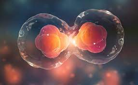
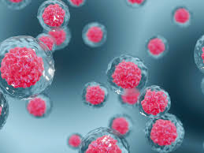

O que são Células Tronco?
Células tronco, são células que não têm uma especialidade, e têm a capacidade de autorrenovação. Além de poder se multiplicar em outras células tronco, como essas células não tem especialidade, elas podem se transformar em outros tipos de células (como célula nervosa, célula do intestino, célula sanguínea, célula cardiaca...).

Aplicações

Medicina Regenerativa:
As células-tronco têm o potencial de regenerar tecidos danificados ou doentes. Isso pode ter aplicações em tratamentos para certas condições como lesões na medula espinhal, doenças cardíacas e diabetes
Pesquisa Médica:
As células-tronco são extremamente necessárias para entender as bases genéticas de doenças e para desenvolver medicamentos e terapias personalizadas.
